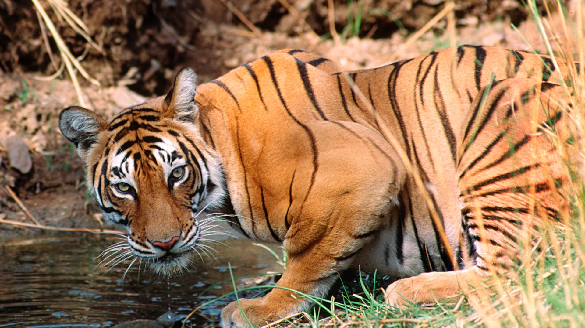
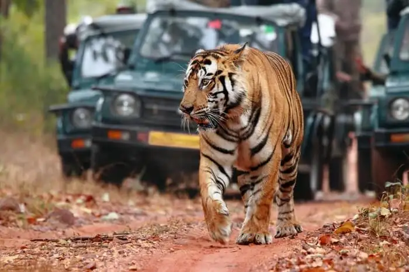

| Home | About | Safari Timings | Gallery | FAQ | Contact |
|  | |||||
About Ranthambore National ParkRanthambore National Park is located about 13.5 kilometers from the city of Sawai Madhopur in Rajasthan. Located at the junction of the Aravali and Vindhya hill ranges, this is one of the finest places to view wild animals, especially as they are used to being stared at here. The park covers an area of approximately 400 sq km, and if combined with the area of Sawai Man Singh Sanctuary area, is around 500 sq km. Ranthambore National Park is dotted with structures that remind you of bygone eras. There are numerous water bodies scattered all across the park, which provide perfect relief to the wild animals during the scorching hot days in summers. A huge fort, after which the park is named, towers over the park atop a hill. There are many ruins of bygone eras scattered all over the jungle, which give it a unique, wonderful and mixed flavour of nature, history and wildlife. Tigers at Ranthambore National park have been known to even hunt in full view of human visitors. |
 | ||||
History of Ranthambore Tiger ReserveRanthambore National Park was established initially as Sawai Madhopur Game Sanctuary in 1955 by the Government of India. In 1973, it was declared as one of the Project Tiger reserves in India. It was on 1st November, 1980 that Ranthambore was declared a national park, while the forests located beside it were named Sawai Man Singh Sanctuary & Keladevi Sanctuary. Ranthambore boasts being home to a large number of mammals, reptile, and bird species. The national park in Rajasthan is primarily known as the home to Royal Bengal Tigers. Other than this, the national park also has a rich population of leopards, sloth bears, several deer species like chital (spotted deer), marsh crocodile, palm civet, jackal, desert fox, serpent eagle, waterfowl that along with others make 40 species of mammals, 35 species of reptiles and 320 species of birds. The popular wild animals in Ranthambore includes Tigers, Leopards, Striped Hyenas, Sambar deer, Chital, Nilgai, Common or Hanuman langurs, Macaques, Jackals, Jungle cats, Caracals, Sloth bears, Black bucks, Rufoustailed Hare, Indian Wild Boar, Chinkara, Common Palm Civets or Toddy cat, Coomon Yellow Bats, Desert Cats, Fivestriped Palm Squirels, Indian False Vampires, Indian Flying Foxes, Indian Foxes, Indian Gerbilles, Indian Mole Rats, Indian Porcupines, Longeared Hedgehogs, Ratels, Small Indian Mongoose, Small Indian Civets and Common mongoose. The park also has a large number of marsh crocs Reptiles, Snub Nosed Marsh Crocodiles, Desert Monitor Lizards, Tortoise, Banded Kraits, Cobras, Common Kraits, Ganga Soft Shelled Turtles, Indian Pythons, North Indian Flap Shelled Turtles, Rat Snakes, Russel’s Vipers, Saw-scaled Vipers and the Indian Chamaeleon. |
|||||
|
copyright © 2022. All Rights Reserved |
|||||